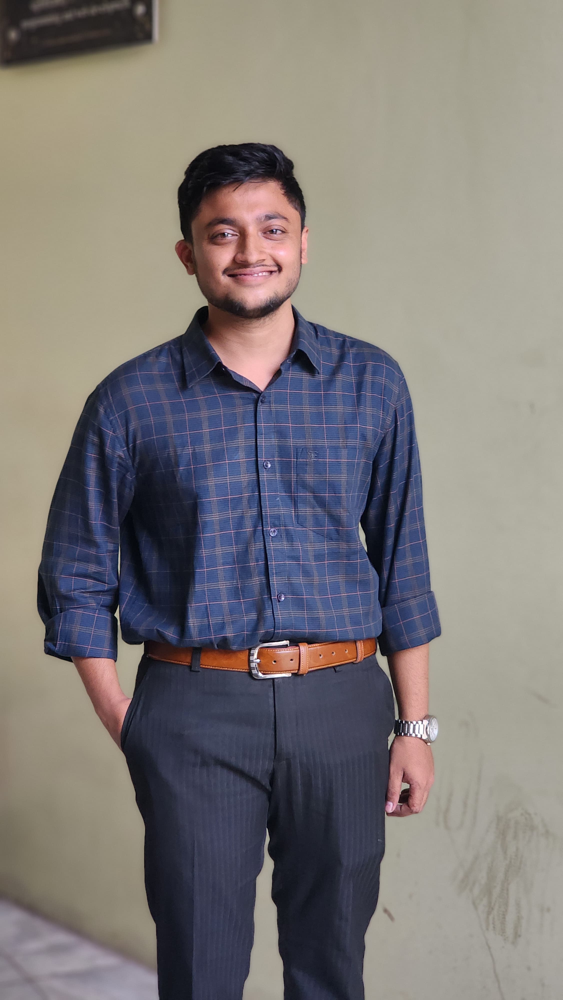

Ragib Nur Nihal
Contact:
ragib_85085@bscse.puc.ac.bd
Github:
github.com/nihal-titki-taka
Codeforces:
codeforces.com/profile/rnurnihal
CodeChef:
codechef.com/users/ragib_nihal
LeetCode:
leetcode.com/u/Ragib_Nihal
AtCoder:
atcoder.jp/users/Ragib_Nihal
|

|
Motivated Software Engineering student skilled in C++,
problem-solving, and competitive programming, with a passion
for clean coding and continuous learning.
|
EDUCATION
-
B.Sc. in Computer Science and Engineering (CSE)
Premier University, Chattogram (Present)
-
Higher Secondary Certificate (HSC)
Bakolia Government College, Chattogram (2023)
-
Secondary School Certificate (SSC)
Coxsbazar Government High School (2021)
TECHNICAL SKILLS
- C
- C++
- Java
- MySQL
- Git & GitHub
- Problem Solving
- VS Code
- IntelliJ IDEA
PERSONAL EXPERIENCE
Data Structures And Algorithms
-
Strong understanding of arrays, linked lists, stacks,
queues, trees, graphs, and hashing.
-
Regular problem-solving practice to improve algorithmic thinking.
-
Skilled in C++ and STL for solving algorithmic problems.
-
Focused on writing clean and optimized code.
COMPETITIVE PROGRAMMING
- Regularly solving problems on online judges
-
Strong understanding of algorithms and optimization techniques
Online Judges Profiles
- Codeforces
- CodeChef
- LeetCode
- LightOJ
- AtCoder
PROJECTS
Car Game (C++, Windows API)
- Developed a classic car game using C++
-
Implemented speed increment system after scoring milestones
- Added pause and exit functionality
CERTIFICATIONS
- NDG Linux Essentials – Cisco
- Software Engineering – Coursera
- Complete SQL Bootcamp – Udemy
- Master Git & GitHub – Udemy